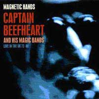
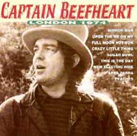
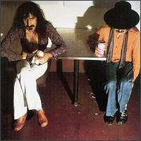
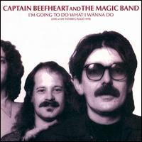
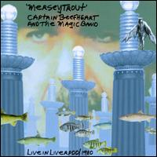
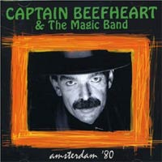
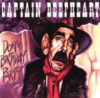

Выпущенные в свет "живые" работы Бифхарта, что называется, "оставляют желать"... Единственный полноценный официальный концертный диск, представляющий MAGIC BAND во всей красе, был выпущен лишь в 2000 году и весьма в ограниченном количестве. Остальное - или состав (и репертуар) "не тот", или - бутлеги. Да и тех немного. В принципе, существует большое количество записей периода активной концертной деятельности - конца 60-х - начала 70-х, с "золотым" составом: и Зут Хорн Ролло, и Драмбо, и Рокет Мортон... Но - то ли качество низкое, то ли ещё что-то. Отчасти подобный материал представлен на концертных сборниках (бутлегах) "Magnetic Hands" (2002) и "Railroadism" (2003), а также на официальном "бокс-сете" (см. раздел "Некоторые сборники").
Magnetic Hands | Railroadism
London
1974 |
Bongo Fury | Copenhagen
I'm Going To Do What I Wanna Do
Merseytrout | Amsterdam | Don's Birthday Party

"MAGNETIC HANDS (Live In The UK 72-80)" (74.45)Запись: 1972, 1973, 1975, 1980 (Великобритания)
Выпуск: июнь 2002, Viper (Великобритания)
1) Click Clack (4.50)
2) Old Black Snake (Спайви/Джонсон?) (3.26)
3) Grow Fins (5.10)
(фестиваль "Биккершоу", 7 мая 1972)
4) Peon (3.03) [инструментал]
5) Golden Birdies (2.20)
(Манчестер, 1 апреля 1972)
6) Electricity (7.03)
7) Sugar Mama (Хукер? Хаулин Вулф?) (8.26)
(Лестер, 1 мая 1973)
8) Orange Claw Hammer (3.55)
9) Gimme Dat Harp Boy (4.41)
(фестиваль в Небуорте, 5 июля 1975)
10) Dali's Car (2.05) [инструментал]
11) Beatle Bones 'N' Smokin' Stones (4.08)
(Портсмут, 1 декабря 1975)
12) Flavor Bud Living (2.11) [инструментал]
(Лондон, 12 ноября 1980)
13) Nowadays A Woman's Gotta Hit A Man (4.42)
14) Abba Zaba (3.42)
15) Hothead (3.30)
16) Safe As Milk (3.40)
17) Dropout Boogie (2.43)
18) Kandy Korn (5.01)
(Ливерпуль, 29 октября 1980)
(1-5):
Дон Ван Влит, Билл Хаклроуд, Марк Бостон, Эллиот Ингбер,
Арт Трипп, Рой Эстрада
(6,7):
Дон Ван Влит, Билл Хаклроуд, Марк Бостон, Алекс Снуффер,
Арт Трипп, Рой Эстрада
(8,9):
Дон Ван Влит, Эллиот Ингбер, Грег Дэвидсон, Брюс Фаулер,
Джон Френч, Джимми Карл Блэк
(10,11):
Дон Ван Влит, Эллиот Ингбер, Денни Уолли, Брюс Фаулер,
Джон Френч
(12-18):
Дон Ван Влит, Джефф Морис Теппер, Ричард Снайдер, Эрик
Дрю Фельдман, Роберт Уильямс, Гэри Лукас
ПРИМЕЧАНИЕ:
Очередной "полуофициальный" релиз; очевидно, это выпускалось без разрешения
Ван Влита, но издатели утверждают, что все "необходимые отчисления"
были сделаны
КОММЕНТАРИЙ К.У.
Этот диск предназначен, видимо, именно для очень продвинутых (задвинутых)
любителей. Причина, с одной стороны, в необычайно интересном материале, а с
другой - в достаточно ужасном качестве записи: час с четвертью такого издевательства
над ушами просто так не вынести. Удовлетворительный звук имеется только на треках,
взятых с концерта в Ливерпуле (см. диск "MERSEYTROUT") - поэтому издевательство
уменьшается минут до пятидесяти. Впрочем, наших (постсоветских) меломанов, нередко
просто выросших на творчески качественной, но безобразно записаной музыке, такими
мелочами не запугаешь. А материал действительно уникальный. "Живой"
Бифхарт во всём своём многообразии. Блюз? Пожалуйста: и свой - неудержимый,
как поезд, "Click Clack", "Grow Fins", мощнейший "Gimme
Dat Harp Boy", и чужой - "Sugar Mama" (звучащий, скорее, как
известная вещь "I'm A King Bee" с несколько маршеобразным ритмом)
и "Old Black Snake", исполненный "акапелла", т.е. без всякого
музыкального сопровождения - одно из любимых развлечений Бифхарта; того же рода
и собственная "Orange Claw Hammer". Классические гитарные инструменталы
"Peon", "Dali's Car" и "Flavor Bud Living". Фантастическая
шаманская "Golden Birdies", интересная приблюзованная версия "Electricity",
театральная (в хорошем смысле) "Beatle Bones..." - эти вещи нечасто
встречаются на концертных записях. Ну и всё "ливерпульское" - что
надо. Так что пусть каждый решает сам, что для него важнее - интересная музыка
или качество звучания...
 "RAILROADISM (Live In The USA 72-81)" (72.33)
"RAILROADISM (Live In The USA 72-81)" (72.33)
[бутлег]
Запись: 1966, 1972, 1973, 1975, 1977, 1978, 1981
(США)
Выпуск: май 2003, Viper (Великобритания)
1) Old Black Snake (Спайви/Джонсон?) (3.37)
(Бостон, 22 января 1972)
2) I'm A King Bee (Джеймс Мур? Слим Харпо?) (5.59)
(Нью-Йорк, 24 февраля 1973)
3) The Blimp / Air Bass - Soft Shoe (sax improv.) [инструментал]
(6.18)
4) I'm Gonna Booglarise You, Baby (3.48)
(Лос-Анджелес, 14 июля 1975)
5) A Carrot Is As Close As A Rabbit Gets To A DIiamond (2.22)
[инструментал]
6) China Pig / Railroadism (8.10)
7) I Love You, You Big Dummy (spoken) (0.22) [речитатив]
(Рочестер, 3 ноября 1977)
8) Grow Fins (5.52)
9) Floppy Boot Stomp (4.09)
(Нью-Йорк, 25 ноября 1977)
10) One Nest Rolls After Another [стихи] / Harry Irene (4.00)
11) The Dust Blows Forward 'N' The Dust Blows Back (2.13)
(Хьюстон, 12 декабря 1978)
12) Ashtray Heart (3.47)
13) Dirty Blue Gene (3.50)
14) Smithsonian Institute Blues (2.21)
15) One Red Rose That I Mean (2.13) [инструментал]
16) Veteran's Day Poppy (4.46)
17) Big Eyed Beans From Venus (5.20)
(Реседа, Калифорния, 29 января 1981)
18) Avalon Blues (3.14) [инструментал]
(Сан-Франциско, 1966)
(1):
Дон Ван Влит, Билл Хаклроуд, Марк Бостон, Эллиот Ингбер,
Арт Трипп, Рой Эстрада
(2):
Дон Ван Влит, Билл Хаклроуд, Марк Бостон, Алекс Снуффер,
Арт Трипп, Рой Эстрада
(3,4):
Дон Ван Влит, Эллиот Ингбер, Грег Дэвидсон, Брюс Фаулер,
Джон Френч, Джимми Карл Блэк
(5-9):
Дон Ван Влит, Джефф Морис Теппер, Денни Уолли, Эрик Дрю
Фельдман, Роберт Уильямс
(10,11):
Дон Ван Влит, Джефф Морис Теппер, Эрик Дрю Фельдман, Брюс
Фаулер, Ричард Ридас, Роберт Уильямс
(12-17):
Дон Ван Влит, Джефф Морис Теппер, Эрик Дрю Фельдман, Ричард
Снайдер, Роберт Уильямс
(18):
Дон Ван Влит, Алекс Снуффер, Даг Мун, Джерри
Хэндли , Пол Блэйкли (?)
ПРИМЕЧАНИЕ:
Второй концертный сборник лэйбла Viper, "близнец" "MAGNETIC HANDS..."
по принципу составления, оформлению и (полу)официальности. Несмотря на анонсированный
охваченный период (1972-81) включает в себя композицию 1966 года (исходный состав
MAGIC BAND)

"LONDON 1974" (39.36)Запись: 9 июня 1974, Лондон
Выпуск: 1994, Movie Play Gold (Португалия), Media 7 Records (Франция)
1) Mirror Man (4.48)
2) Upon The My-O-My (4.07)
3) Full Moon, Hot Sun (3.29)
4) Sugar Bowl (2.55)
5) Crazy Little Thing (3.45)
6) This Is The Day (7.48)
7) New Electric Ride (3.20)
8) Abba Zaba (3.16)
9) Peaches (6.03)
Дон Ван Влит - вокал, губная гармоника
и концертный "TRAGIC BAND":
Дин Смит - гитара
Фуцци Фускальдо - гитара
Дел Симмонс - саксофон, кларнет, флейта
Майкл Смотермэн - клавишные
Пол Уриг - бас-гитара
Тай Граймс - ударные, перкусии
Продюсер: Энди ДиМартино
КОММЕНТАРИЙ К.У.
Видимо, лучшая из записей "трагического" 74-го - концерт, как никак.
Что касается песен из ранних альбомов ("Mirror Man", "Crazy Little
Thing", "Abba Zaba") - неплохо, но очень уж спокойно, размеренно,
и явно чего-то не хватает - ненормальности какой-то, шершавости, драматизма(?),
оттяга - как раз того, что так ценно в Бифхарте. Впрочем, то же самое можно
сказать и о обо всём концерте. Всё это как-то напоминает то ли Джо Кокера, то
ли Марка Нопфлера, то ли ещё кого... Несомненно на высоте "This Is The
Day" - одна из самых лучших лирических песен, которые я вообще когда-либо
слышал. Хороша кода в "Peaches" - вот если бы всё было в таком духе...
Короче говоря: лучшие - "Mirror Man", "Upon The My-O-My",
"This Is The Day", "Abba Zaba", "Peaches" (концовка);
остальные - худшие ("лучшее" далеко не всегда означает хорошее, а
"худшее" - плохое...)
<в "статью1">
<концерт
на сайте "Музыка MP3">
<"звуки">

"BONGO FURY" (Заппа/Бифхарт/MOTHERS) (41.07)Запись: 20 и 21 мая 1975, Остин, штат Техасс
Выпуск: октябрь 1975, DiscReet (США)
Впервые на CD: 1989, Rykodisc
1) Debra Kadabra (Фрэнк Заппа) (3.54)
2) Carolina Hard-Core Ecstasy (Фрэнк Заппа) (5.59)
3) Sam With The Showing Scalp Flat Top (Дон Ван Влит)
(2.51)
4) Poofter Froth Wyoming Plans Ahead (Фрэнк Заппа) (3.03)
5) 200 Years Old (Фрэнк Заппа) (4.32) *
6) Cucamonga (Фрэнк Заппа) (2.24) *
7) Advance Romance (Фрэнк Заппа) (11.17)
8) Man With The Woman Head (Дон Ван Влит) (1.28)
9) Muffin Man (Фрэнк Заппа) (5.32)
Треки (5) и (6) и вступление к (9) записаны в студии The Record Plant в январе-феврале 1975
Фрэнк Заппа - гитара, вокал
Дон Ван Влит - губная гармоника, вокал (1, 3, 4, 5, 8), "хозяйственные
сумки" [прикол от Заппы: оставшийся "без ансамбля" Бифхарт повсюду носил бумажные
пакеты со своими текстами, рисунками и пр., не расставаясь с ними и на сцене]
Джордж Дюк - клавишные, вокал
Наполеон Мёрфи Брок - саксофон, вокал
Брюс Фаулер - тромбон, "фантастические танцы"
Том Фаулер - бас-гитара, "тоже танцы"
Денни Уолли - гитара, вокал
Терри Боззио - ударные, "moisture" ("сырость") [ещё какой-то прикол от
Заппы]
Честер Томпсон - ударные (5,6)
Продюсер: Фрэнк Заппа
ПРИМЕЧАНИЯ:
1) В чартах - 66-е место (США)
2) В альбом не вошла записанная на тех же концертах версия песни Фрэнка "The
Torture Never Stops" с вокалом и гармоникой Ван Влита; увидела свет лишь в 90-х
годах на сборниках Заппы
3) Выпущен в России на CD (ArsNova, ANPC-9909002)
КОММЕНТАРИЙ К.У.
В большей степени альбом Фрэнка Заппы (в т.ч. и по звучанию), возможно, не
самый лучший. Но голос и энергетика Бифхарта местами просто поражают. Наиболее
технически качественная из всех концертных бифхартовских записей. Лучшие: "Debra
Kadabra", "200 Years Old", "Sam With The Showing Scalp Flat Top", "Man With
The Woman Head" (хоть последние две, в общем-то, и не песни); неплохи также
"Advance Romance", "Muffin Man" и "ковбойская песня"
"Poofter Froth Wyoming Plans Ahead" (привет битломанам). Худшие, соотвественно,
"Carolina Hard-Core Ecstasy" и "Cucamonga" (да простят меня поклонники Заппы)
<в "статью1">
<концерт
на сайте "Музыка MP3">
"COPENHAGEN" (55.58)
[бутлег]
Запись: 31 октября 1975, Копенгаген
1) Moonlight On Vermont (3.39)
2) Abba Zaba (3.27)
3) Orange Claw Hammer (4.18)
4) Dali's Car (1.27) [инструментал]
5) When It Blows Its Stacks (3.57)
6) My Human Gets Me Blues (2.27)
7) Band introduction (1.14)
8) Alice In Blunderland (3.55) [инструментал]
9) Natchez Burning (Хаулин Вулф?) (6.43)
10) Beatle Bones 'N' Smokin' Stones (4.11)
11) improvisation (incl. Drumbo's Tap Dance) (7.04) [инструментал]
12) Poofter's Froth Wyoming Plans Ahead (Фрэнк Заппа) (3.11)
13) Electricity (Дон Ван Влит/Херб Берманн) (3.38)
14) Golden Birdies (2.21)
15) Big Eyed Beans From Venus (4.19)
Дон Ван Влит - вокал, губная гармоника, саксофон
Денни Уолли - гитары
Эллиот Ингбер - гитары
Брюс Фаулер - духовой бас, тромбон
Джон Френч - ударные, перкуссии, гитара (4)
ПРИМЕЧАНИЯ:
1) Запись практически не доступна на дисках - хотя вроде был в своё время бутлег
"HALLOWEEN 1975", - но есть в Интернете (mp3).
2) На сайте "Антивоенная коллекция рок-н-ролла" треки расположены
в алфавитном порядке; последняя композиция ("Big Eyed Beans From Venus")
- не до конца; но зато имеется "бонус-трек" - демо-запись песни "Candle
Mambo"
3) На сайте "Captain Beefheart Radar Station" закачка треков который
месяц "временно невозможна"...
КОММЕНТАРИЙ К.У.
Один из первых концертов "возрождённого" MAGIC BAND. Обратите внимание
на состав: все музыканты, кроме Джона Френча, играли с Заппой; причём трое,
включая самого Ван Влита - не более чем за полгода до того. Но это уже совсем
другая музыка (только запповская "Poofter Froth Wyoming..." - как
воспоминание). И уж совершенно ничего похожего на "TRAGIC BAND". Группа
со своим лидером явно на подъёме. Отличное выступление, демонстрирующее всю
мощь и необычность Бифхарта. (Интересно, что записанный вскоре альбом "BAT
CHAIN PULLER" этаким задумчивым настроением будет довольно сильно отличаться
от этой записи). Здесь нет слабых вещей; очень естественно сочетаются (не теряя
своего своеобразия) и композиции с очень по-разному звучащих в оригинале альбомов,
и классический блюз "Natchez Burning", и завёрнутая инструментальная
импровизация... Всё хорошо, но качество, качество - увы...
<концерт на сайте "Музыка MP3">

"I'M GOING TO DO WHAT I WANNA DO (Live At My Father's Place 1978)" 2CDЗапись: 18 ноября 1978, Нью-Йорк
Выпуск: 2000, Rhino (США)
CD1 (73.57):
1) Tropical Hot Dog Night (4.36)
2) Nowadays A Woman's Gotta Hit A Man (5.07)
3) Owed T'Alex (Дон Ван Влит/Херб Берманн) (5.20)
4) Dropout Boogie (Дон Ван Влит/Херб Берманн) (3.13)
5) Harry Irene (3.46)
6) Abba Zaba (3.44)
7) Her Eyes Are A Blue Million Miles (4.12)
8) Old Fart At Play (2.26)
9) Well (3.55)
10) Ice Rose (3.56) [инструментал]
11) Moonlight On Vermont (3.52)
12) The Floppy Boot Stomp (4.19)
13) You Know You're A Man (3.26)
14) Bat Chain Puller (5.55)
15) Apes-Ma (0.47) [стихи]
16) When I See Mommy I Feel Like A Mummy (6.04)
17) Veteran's Day Poppy (9.11)
CD2 (10.05):
18) Safe As Milk (5.23)
19) Suction Prints (4.41) [инструментал]
Дон Ван Влит - вокал, саксофоны, губная гармоника, свист
Джефф Морис Теппер - гитары
Ричард Ридас - гитары, аккордеон
Брюс Фаулер - тромбон, духовой бас
Эрик Дрю Фельдман - бас-гитара, клавишные, синтезатор
Роберт (Артур) Уильямс - ударные, перкуссии
Мэри Джейн Эйзенберг - маракасы, танцы
ПРИМЕЧАНИЯ:
1) Официальное издание выпущено ограниченным тиражом в 5000 экземпляров (можно
попробовать заказать его здесь:
http://www.rhinohandmade.com/browse/ProductLink.lasso?Number=7741
http://www.vh1.com/artists/az/captain_beefheart_1/357642/album.jhtml)
2) Запись многократно под разными названиями и в различной комплектации выходила
на бутлегах; один из относительно доступных вариантов - "LIVE AT MY FATHER'S
PLACE"
КОММЕНТАРИЙ К.У.
Единственная официально изданная (спустя 22 года) запись концерта Бифхарта
и "настоящего" MAGIC BAND... Состоялся он вскоре после выхода "SHINY
BEAST..." и построен в основном на его же материале (не хватает лишь двух песен
с альбома). И это сразу чувствуется: звучит всё в основном неспешно, мягко (относительно,
конечно) - затейливо мелодичная, даже лирическая музыка... Но не надо ставить
её рядом с также "неагрессивными" записями 74-го! Это Бифхарт, самый
настоящий, только демонстрирующий несколько иные свои стороны. На передний план
выведены духовые, гармоника, клавишные (да и барабаны тоже); таким образом,
гитары несколько задвинуты - по крайней мере, одна из них... что не в лучшую
сторону сказалось на песнях, скажем, с "TROUT MASK..." - в особенности "Moonlight
On Vermont". (А на чисто вокальном номере "Well" Бифхарт, на
мой взгляд, слишком уж высоко берёт - сравните с альбомным вариантом...). Но
вещи с недавнего альбома звучат отлично; то же можно сказать и об остальных.
Очень интересна "Dropout Boogie" с тромбоном (вообще Фаулер здесь
весьма заметен - например, завершающий духовой дуэт с Капитаном (на саксофоне)
в "Veteran's Day Poppy" и мн. др.). Очень забавно слушать, как Бифхарт
представляет музыкантов... Качество записи очень даже неплохое. А уж музыка...
<в "статью1">
<"звуки">

"MERSEYTROUT (Live In Liverpool 1980)" (72.55)Запись: 29 октября 1980, Ливерпуль
Выпуск: 2000, Ozit/Milksafe (Великобритания)
1) Toaster (2.50) [соло на бас-гитаре]
2) Nowadays A Woman's Gotta Hit A Man (3.40)
3) Abba Zaba (3.07)
4) Hot Head (3.42)
5) Dirty Blue Gene (3.56)
6) Best Batch Yet (4.37)
7) One Man Sentence (1.14) [стихи]
8) Safe As Milk (3.29)
9) Flavour Bud Living (1.09) [инструментал]
10) Her Eyes Are Blue Million Miles (3.49)
11) One Red Rose That I Mean (2.05) [инструментал]
12) Doctor Dark (3.10)
13) Bat Chain Puller (4.26)
14) My Human Gets Me Blues (2.42)
15) Sugar 'N' Spikes (2.23)
16) Veteran's Day Poppy (4.19)
17) Dropout Boogie (2.21)
18) Sheriff Of Hong Kong (6.20)
19) Kandy Korn (4.27)
20) Suction Prints (4.45) [инструментал]
21) Big Eyed Beans From Venus (4.11)
Дон Ван Влит - вокал, саксофон, губная гармоника, китайские
гонги
Джефф Морис Теппер - гитары, соло-гитара (11)
Ричард Снайдер - гитары, бас-гитара(?)
Эрик Дрю Фельдман - бас-гитара, синтезатор, электропианино
Роберт (Артур) Уильямс - ударные, перкуссии
Гэри Лукас - гитары, соло-гитара (9), чтение стихов (7)
ПРИМЕЧАНИЯ:
1) В большинстве источников указан как бутлег; а, к примеру, в некоторых "интернет-магазинах"
подаётся как официальное издание
2) Впервые на CD запись этого концерта вышла в 1998 году под названием "THE
CAPTAIN LIVE IN LIVERPOOL 1980" (также бутлег) - на двух дисках общей длительностью
87 минут: здесь содержится весь концерт, т.е. со всеми разговорами, паузами
и т.д. общей сложностью на 14 минут(!)
КОММЕНТАРИЙ К.У.
По качеству это, конечно, не "BONGO FURY" - в частности, местами
задвинут вокал, - но ничего. А сам концерт... Первыми же звуками странноватого
басового соло он слегка сдвигает крышу, берёт за... жабры и ведёт до короткой,
но сумасшедшей коды "Big Eyed Beans From Venus" без какой-либо передышки.
Ядерный ("особый бифхартовский") драйв. Может быть, музыканты играют
чуть прямолинейно, чуть частят - этот тур проходил после двух лет почти полного
(если не считать записи "DOC AT THE RADAR STATION") бездействия, и
в состав группы только-только вошёл новый участник (Снайдер) - может быть...
Но на удивление здорово звучат песни с самых первых альбомов - "Abba Zaba",
"Safe As Milk", "Dropout Boogie"; с "TROUT MASK..."
- "My Human Gets Me Blues", "Sugar 'N' Spikes" конечно же,
"Veteran's Day Poppy", - да и с остальных, записанных другими музыкантами.
Ну и , само собой, на высоте номера со свежей пластинки. Очень неплохи инструменталы.
Немного ломают беспардонно "обрезанные" на полуслове реплики между
песнями - но это не смертельно. Даже не собираюсь выделять какие-либо "лучшие"
и "худшие" - слушается всё на одном дыхании

"AMSTERDAM '80" (74.06)Запись: 1 ноября 1980, Амстердам
Выпуск: 2006, Major League Productions (Великобритания)
1) Abba Zaba (3.45)
2) Hot Head (3.32)
3) Ashtray Heart (3.36)
4) Dirty Blue Gene (4.11)
5) Best Batch Yet (5.02)
6) Safe As Milk (3.56)
7) Her Eyes Are A Blue Million Miles (3.33)
8) One Red Rose That I Mean (3.21) [инструментал]
9) Doctor Dark (3.11)
10) Bat Chain Puller (5.26)
11) My Human Gets Me Blues (3.07)
12) Sugar 'N' Spikes (2.36)
13) Veteran's Day Poppy (4.44)
14) Dropout Boogie (Дон Ван Влит/Херб Берманн) (2.33)
15) Sheriff Off Hong Kong (6.41)
16) Kandy Korn (5.00)
17) Suction Prints (4.59) [инструментал]
18) Big Eyed Beans From Venus (4.48)
Дон Ван Влит - вокал, саксофон, губная гармоника, китайские
гонги
Джефф Морис Теппер - гитары, соло-гитара (8)
Ричард Снайдер - гитары, бас-гитара
Эрик Дрю Фельдман - бас-гитара, синтезатор, электропианино
Роберт (Артур) Уильямс - ударные, перкуссии
[Гэри Лукас - гитара]
ПРИМЕЧАНИЕ:
В объём данного диска не уместились три вещи, исполненные на этом концерте:
"Nowadays A Woman's Gotta Hit A Man", "Flavour Bud Living"
и "One Man Sentence". Две последних исполнял Гэри Лукас, который в
то время ещё не был основным гитаристом; таким образом, его гитару здесь можно
услышать (вероятно) только в песне "Her Eyes Are A Blue Million Miles"
(7)
<"звуки">

"DON'S BIRTHDAY PARTY" (75.12)Запись: 15 января 1981, Сиэттл
Выпуск: 198?, Europian Double Bootleg
Впервые на CD: 1994, Tuff Bites (Люксембург)
1) Suction Prints (intro version) (2.36)
[инструментал]
2) My Human Gets Me Blues (3.27)
3) Nowadays A Woman's Got To Hit A Man (4.15)
4) Hot Head (3.36)
5) Ashtray Heart (4.09)
6) Dirty Blue Gene (4.24)
7) Best Batch Yet (6.13)
8) Safe As Milk (5.23)
9) A Carrot Is As Close As A Rabbit Gets To A Diamond (2.12)
[инструментал]
10) One Red Rose That I Mean (2.27) [инструментал]
11) Doctor Dark (3.01)
12) Bat Chain Puller (8.24)
13) Sugar 'N Spikes (3.23)
14) Veteran's Day Poppy (4.24)
15) Sheriff Of Hong Kong (6.53)
16) Suction Prints (full band version) (5.21) [инструментал]
17) Big Eyed Beans From Venus (4.46)
Дон Ван Влит - вокал, саксофоны, губная гармоника
Джефф Морис Теппер - гитары
Ричард Снайдер - гитары, бас-гитара
Эрик Дрю Фельдман - бас-гитара, клавишные, синтезатор, мандолина
Роберт (Артур) Уильямс - ударные, перкуссии
Гэри Лукас - гитара
Magnetic Hands | Railroadism
London
1974 |
Bongo Fury | Copenhagen
I'm Going To Do What I Wanna Do
Merseytrout | Amsterdam | Don's Birthday Party